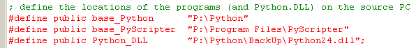

april 2007
Portable SciPy
HKLM\SYSTEM\CurrentControlSet\Control\Session Manager\Environment\PATH = %PATH%
p:\python\lib\site-packages\graphviz-2.8-win32.egg\bin;
p:\python\lib\site-packages\swig-1.3.24-win32.egg;
p:\python\lib\site-packages\vtk-5.0.1-win32.egg\vtk;
P:\Python;
P:\Python\Scripts;
P:\Python\Tools\Scripts;
P:\Python;p:\python\lib\site-packages\mingw-3.4.5-win32.egg\bin;
p:\python\lib\site-packages\scite-1.73-win32.egg;
HKLM\SYSTEM\CurrentControlSet\Control\Session Manager\Environment\PYTHONPATH =
<identical to PATH>
HKLM\SYSTEM\CurrentControlSet\Control\Session Manager\Environment\PYTHONHOME =
P:\Python
HKLM\SYSTEM\CurrentControlSet\Control\Session Manager\Environment\PATHEXT = %PATHEXT%
py;pyc
Reboot the system (seems to be essential)
Everything works as expected
NOT ENOUGH,
when you try install windows executables e.g. EPYDoc it says, "no valid Python installation found"
uitpakken en
[root epydoc-3.0]# python setup.py install
Introduction
As a spoiled M$ windows user, I'm used to "one-button" installations of new programs. As my first interest is using Python is as a replacement of MatLab, I'm specially interested in SciPy. The SciPy package is maintained by Enthought, who in the past has distributed a "one-button" installer
Python-Enthought Edition, "one-button" install
This distribution is quiet complete for scientific work, but being one of the first, a number of libraries are quit buggy. For the future they are going to distribute the SciPy package in a somewhat different way, better suited for partial updates. At the moment there's only an alpha version available, which isn't (yet) what windows users expect
Python-Enthought Edition, "Enstaller"
As I can't wait for a good installer, and "open source portable applications" are the future, why not try to make myself a distribution. Without any knowledge of how Python should be installed, I did some experiments, and found that it was very easy to make a portable distribution, that seems to work as far as I've tested it. The basic idea of the installation is very simple, all Python files can freely be moved around (as a whole set), as long as ensure that the Python24.dll (or any other version) is available when it's needed. If this is true, anyone can make a portable distibution of his choice in about 10 minutes.
So please let me know if this distribution works or not, by sending me a mail through one of the following:
The current Portable SciPy package contains
Installation
The installation is very simple:
Now you can install at any place you like, and above all, ones the package is installed, it can be freely moved around, because all directory paths are relative.
Creating the distribution
Install Python and all other (portable) programs on your computer. Test if all the programs works correctly.
The basic idea of the installation is very simple, all Python files can freely be moved around, as long as ensure that the Python24.dll (or any other version) is available when it's needed.
Create an Inno Setup file (a basic inno setup file can be downloaded here), where the essential steps are:

And of course the above can be dressed up with desktop shortcuts, autorun after install etc. (btw, most of these features will edit thewindows registry).
The script I used, can be downloaded.
Autorun
I was specially interested in autorun a program from USB stick, so after plugging in the USB stick, some menu program would be started, containing the installed programs. We tried several programs, all rubish. The following tool is a very easy tray menu that can be put on an USB stick
Packages & Libraries
This paragraph contains a list of packages / libraries that are of mine interest.
EasyDialogs , installs automatically Jimmy's Python Pages
Other portable Python Distros
Portable Python, freeware, just Python and Django
Movable Python, shareware, just Python